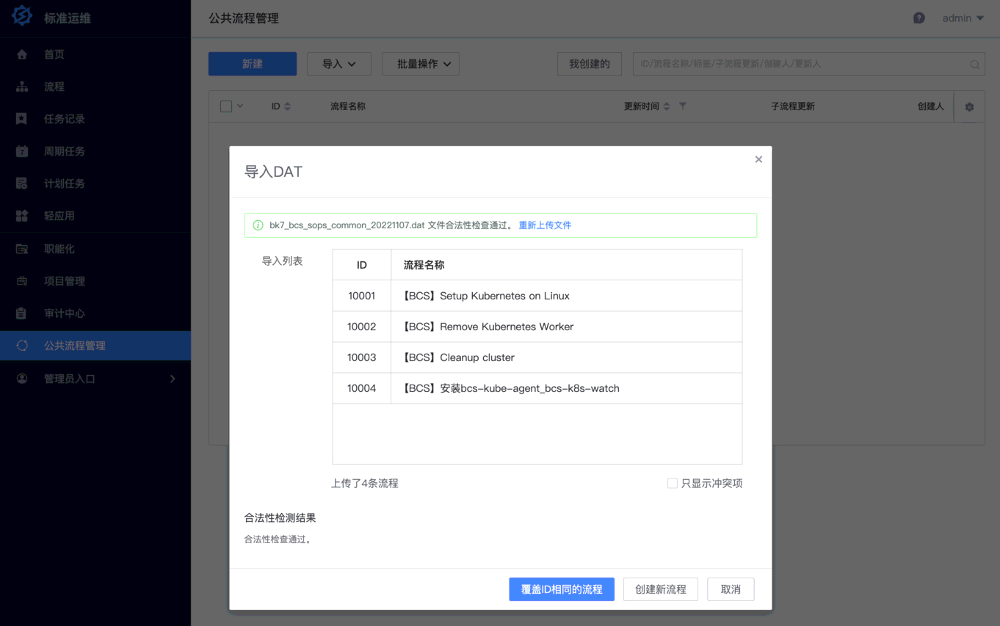

部署容器管理套餐¶
1. 部署容器管理平台¶
1.1. 确认 storageClass¶
在 中控机 检查当前 k8s 集群所使用的存储：
kubectl get sc
NAME PROVISIONER RECLAIMPOLICY VOLUMEBINDINGMODE ALLOWVOLUMEEXPANSION AGE
local-storage (default) kubernetes.io/no-provisioner Delete WaitForFirstConsumer false 3d21h
如果输出的名称不是 local-storage，则需通过创建 custom.yaml 实现修改：
cd ~/bkce7.1-install/blueking/
cat <<EOF >> environments/default/custom.yaml
bcs:
storageClass: 填写上面的查询到的名称
EOF
1.3. 配置 coredns¶
容器管理平台 会在 pod 内请求 蓝鲸制品库 提供的 helm 及 docker 仓库，需确保 coredns 配置正确。
在 中控机 执行：
cd ~/bkce7.1-install/blueking/ # 进入工作目录
BK_DOMAIN=$(yq e '.domain.bkDomain' environments/default/custom.yaml) # 从自定义配置中提取, 也可自行赋值
IP1=$(kubectl get svc -A -l app.kubernetes.io/instance=ingress-nginx -o jsonpath='{.items[0].spec.clusterIP}')
./scripts/control_coredns.sh update "$IP1" bcs.$BK_DOMAIN bcs-api.$BK_DOMAIN docker.$BK_DOMAIN helm.$BK_DOMAIN
./scripts/control_coredns.sh list # 检查添加的记录。
1.4. 开始部署¶
在 中控机 执行：
cd ~/bkce7.1-install/blueking
helmfile -f 03-bcs.yaml.gotmpl sync
# 在admin桌面添加应用，也可以登录后自行添加。
scripts/add_user_desktop_app.sh -u "admin" -a "bk_bcs"
# 设为默认应用。
scripts/set_desktop_default_app.sh -a "bk_bcs"
kubectl get pod -n bcs-system -w
1.5. 导入标准运维流程¶
- 自建集群：由容器管理平台调用 标准运维 在指定主机上安装 k8s，这些主机需要提前安装蓝鲸 GSE Agent。
使用 admin 账户登录 “蓝鲸桌面”，打开 “标准运维”。进入 “公共流程管理” 界面，展开 “导入” 按钮，选择 “导入 DAT 文件”。
在新出现的 “导入 DAT” 窗口中，上传如下文件： * 自建集群所需的标准运维流程模板（20230719 版本）
上传成功后会显示导入列表，点击 “覆盖 ID 相同的流程” 按钮完成导入。如果此前有导入过流程，则导入列表下方会高亮提示 其中4条流程与项目已有流程ID存在冲突，请点击 “覆盖冲突项，并提交” 按钮。

{kind=link}
提示
如果没有导入流程，或者流程 ID 不正确，则新建集群时会报错 “创建失败，请重试”。“查看日志” 里的 “标准运维任务” 步骤日志为
running failed. CreateBkOpsTask err: Object not found: CommonTemplate(id=10001) does not exist.
需要配置DNS解析域名 bcs.$BK_DOMAIN 和 bcs-api.$BK_DOMAIN。
配置成功后，即可在桌面打开 “容器管理平台” 应用了。
提示
“Helm” — “Chart 仓库” 界面初次访问会提示
Record not found，需要点击一次“创建”按钮，即可看到公共仓库的 Chart 列表。项目仓库此时为空，请参考产品使用文档的“推送业务 Helm Chart 到仓库”章节自行上传。提示
在部署蓝鲸监控并完成“容器监控数据上报”后，“集群”界面的 “总览” 和 “节点管理” 的监控图表才有数据。
下一步¶
- 继续 [部署监控日志套餐]